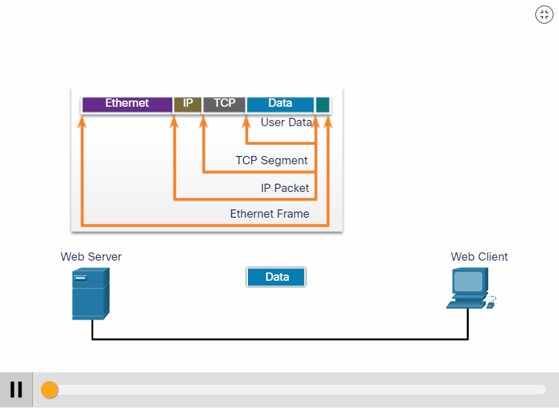
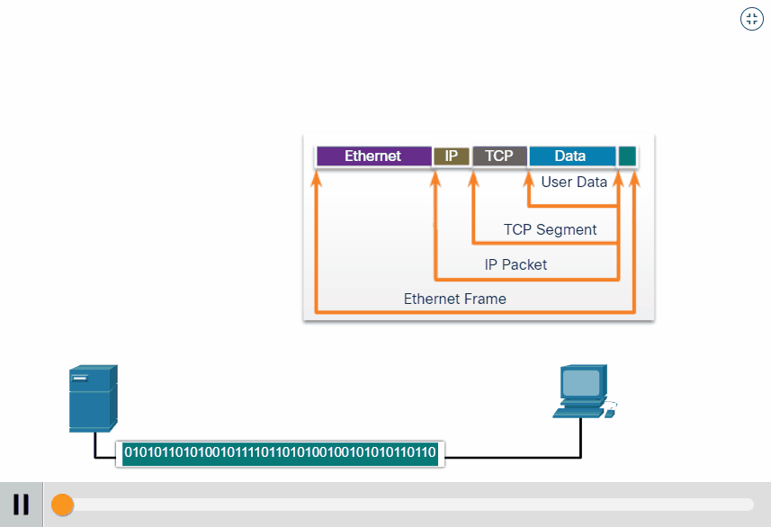

◉ O que é o modelo OSI?
Conforme já mencionado, o modelo de arquitetura TCP/IP possui suas funções divididas em camada da mesma
forma que o OSI. A diferença principal nestas estruturas é o número de camadas encontradas em cada
modelo: no OSI encontramos 7 camadas, enquanto no TCP/IP somente 4: Aplicação, Transporte, Rede e
Interface de rede.
A lógica de posicionamento das camadas dispõe que aquelas mais superiores encontram-se mais próximas do
usuário e trabalham com dados mais abstratos. Dentro do conjunto de protocolos, cada uma das camadas é
programada para responder por um grupo de tarefa específicas e serviços definidos para garantir a
integridade e entrega dos dados trafegados do que será executado na camada superior.
RELEMBRE O MODELO OSI
➤ Aplicação
A camada de aplicação é o topo da arquitetura TCP/IP, tratada de forma monolítica, onde são realizadas a
maior parte das requisições para execução de tarefas na rede. Ela faz a comunicação entre os programas e os
protocolos de transporte e é responsável por tudo que está relacionado aos serviços de comunicação que visam
a interação junto ao usuário.
Dentro da camada de aplicação são utilizados alguns dos seguintes protocolos:
TELNET (Terminal Virtual);
FTP (File Transfer Protocol);
SMTP (Send Mail Transfer Protocol);
DNS (Domain Name System);
HTTP (Hypertext Transfer Protocol).
➤ Transporte
A camada de transporte é a segunda camada de cima para baixo na hierarquização da arquitetura TCP/IP, e
corresponde igualmente à mesma camada no modelo OSI. Neste nível são executadas ações relacionadas à
confiabilidade e integridade dos dados por meio de funções como o controle de fluxo, controle de erro,
sequenciação e multiplexação de mensagens.
Os protocolos definidos para esta camada são o UDP (User Datagram Protocol) e o TCP (Transmission Control
Protocol), com o objetivo de garantir a conversação entre dois hosts.
➤ Internet
A camada de internet, também conhecida como inter-redes, é responsável pela permissão de envio de pacotes por
hosts a qualquer rede e pela garantia de que esses dados cheguem ao seu destino final. Equivalente ao que é
operacionalizado na camada de rede do modelo OSI, na arquitetura TCP/IP a camada de internet tem como
embasamento os protocolos IP (Internet Protocol) e ICMP (Internet Control Message Protocol).
➤ Interface de rede
Esta é a camada de base da arquitetura TCP/IP, correspondente às camadas de enlace de dados e física do OSI,
onde ocorre a conexão básica do host com a rede por meio de algum protocolo capaz de enviar pacotes IP. É por
meio desta camada que é possível transmitir dados a outros computadores dentro de uma mesma rede física, além
de realizar o envio do datagrama recebido pela camada de internet através de meios físicos.
Para se manter em funcionamento a camada de Interface de rede utiliza como principais protocolos:
Ethernet para Redes Locais (LAN – Local Area Network) e PPP (Point-to-Point Protocol) para Redes de Longa
Distância (WAN – Wide Area Network).
➤ EXEMPLO DE ENCAPSULAÇÃO
Quando as mensagens estão sendo enviadas em uma rede, o processo de encapsulamento funciona de cima para baixo. Em cada camada, as informações
da camada superior são consideradas dados dentro do protocolo encapsulado. Por exemplo, o segmento TCP é considerado dados dentro do pacote IP.
Você viu essa animação anteriormente neste módulo. Desta vez, clique em Reproduzir e concentre-se no processo de encapsulamento enquanto um
servidor da web envia uma página da web para um cliente da web.

➤ EXEMPLO DE DESENCAPSULAÇÃO
Esse processo é revertido no host receptor e é conhecido como desencapsulamento. Desencapsulamento é o processo usado por um dispositivo
receptor para remover um ou mais cabeçalhos de protocolo. Os dados são desencapsulados à medida que sobem na pilha em direção ao aplicativo
do usuário final.
Você viu essa animação anteriormente neste módulo. Desta vez, clique em Reproduzir e concentre-se no processo de desencapsulamento.
